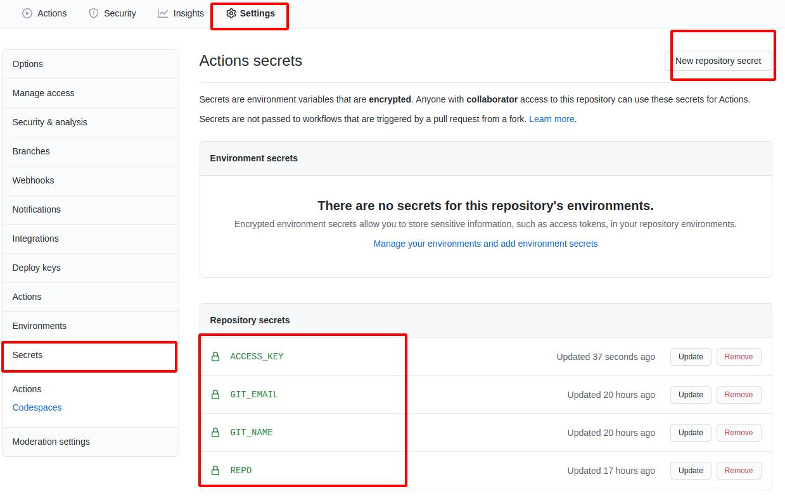

部署 teedoc 生成的网站到 github pages
克隆模板仓库
访问 https://github.com/teedoc/teedoc.github.io
点击 Use this template

然后填写新的仓库名称和描述，基于这个仓库新建一个你自己的仓库，现在你获得了和 teedoc官网一模一样的仓库了
会发现有一个
.github/workflows的目录，这个就是github action的配置文件，我们利用这个功能来实现：
当我们更新仓库的源文件时，github action自动根据这个配置文件的命令构建生成静态网页，然后推送到这个仓库的gh-pages分支
生成 ssh 密钥
然后在本地生成一对key（windows下需要先安装相关软件，请自行安装（安装git就会有））
ssh-keygen -t rsa -f key.txt
得到了key.txt和 key.key.pub两个文件
设置密钥
到文档项目的设置里面设置ssh密钥, 添加一个ssh密钥， 拷贝 key.txt.pub 中的内容，注意是pub文件，即公钥，名字随便取

然后点击Secrets，设置秘密键值对， 需要设置的变量有：
ACCESS_KEY: 复制key.txt中的内容GIT_EMAIL: 设置一个git提交邮箱，设置你的github邮箱即可GIT_NAME: 设置一个git提交名字，设置你的github名字即可REPO: 仓库地址， 设置为组织名/仓库名或者用户名/仓库名，比如teedoc/teedoc.github.io即可

触发构建
像仓库提交一次修改，会自动触发构建， 可以在Actions栏看到进度和日志
如果是绿色的勾， 就代表成功了，否则就是失败了，可以点进去看构建日志报了什么错，一般都是前面的值填错了

设置 pages 服务
然后在设置里面找到 pages 服务设置，打开即可，然后访问对应的域名，
比如这里是https://teedoc.github.io/
注意如果跟路径不是
/，而且没有自定义域名，比如https://teedoc.github.io/my_site/， 则需要在site_config.json中配置"site_root_url":"/my_site/"